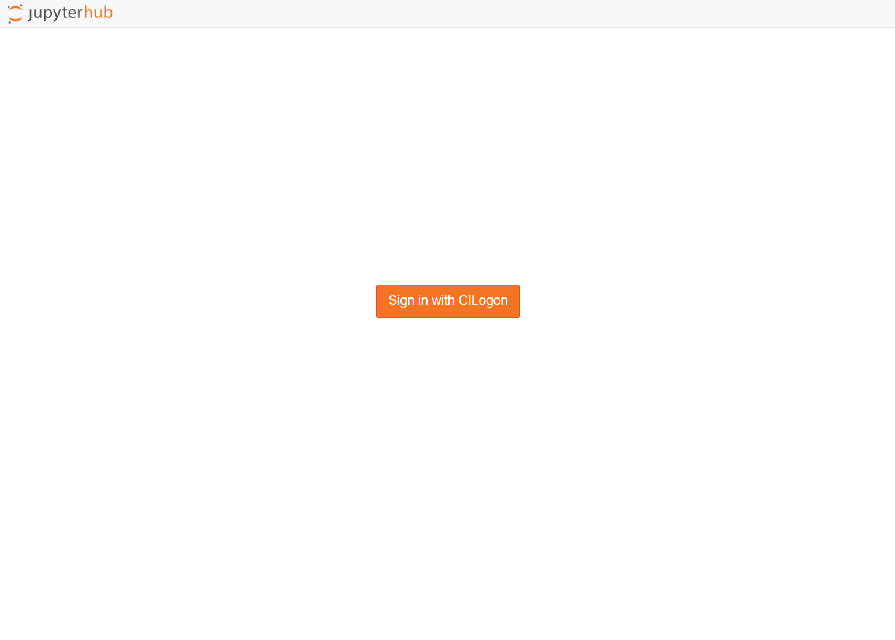
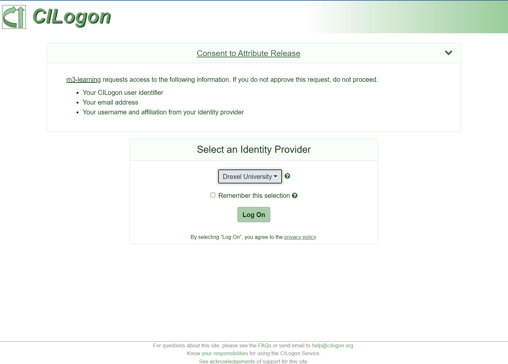
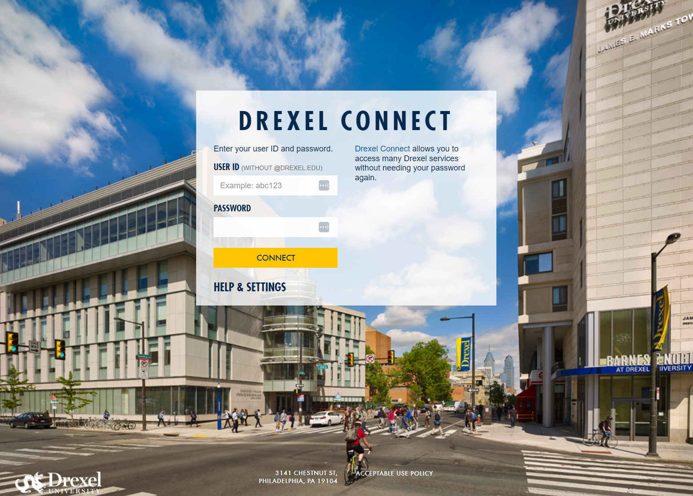
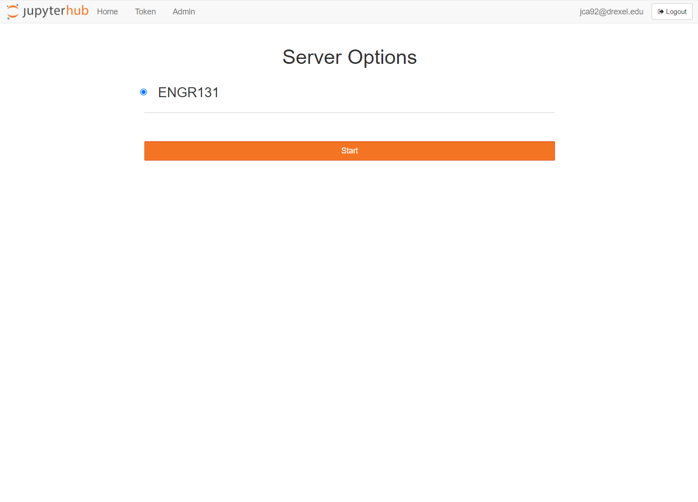
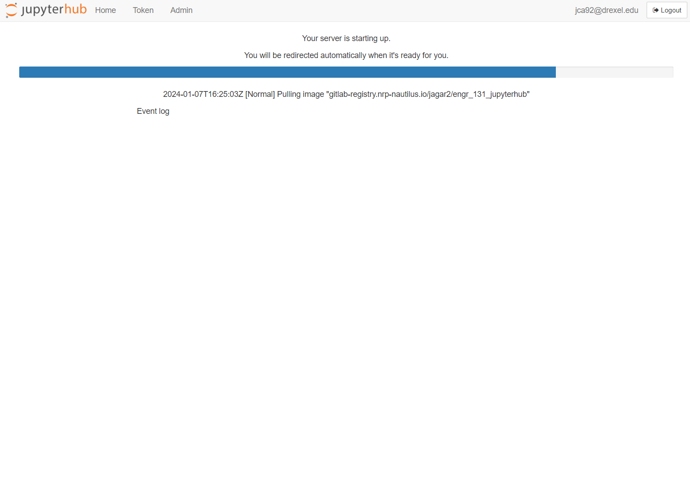
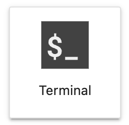

📠How to Use JupyterHub#
There are a variety of ways that you can use, program, and interact with Python. All have their advantages and disadvantages.
For this course we have set up a JupyterHub. This will be the supported computing platform for this course.
ENGR131 JupyterHub#
This JupyterHub is hosted by NRP Nautilus an NSF Funded Federated Kubernetes Cluster.
Connecting#
The JupyterHub can be accessed at jupyterhub
Logging In#
Navigate to the course website jupyterbook
In the upper right corner, click on the rocket icon to launch JupyterHub.

You will be presented with a login page.

Select
Drexel University.

You will be redirected to the Drexel login page. Enter your Drexel credentials.

You will be presented with an option to select a environment. Select
ENGR_131.

This next step might take a minute or two, it is configuring your computing environment.

If you clicked the rocketship icon the jupyter notebook file should automatically open.
Computing Requirements for ENGR 131#
When you login to the JupyterHub all of the computation is conducted on a remote server. You can access the JupyterHub on any laptop with a web browser (Windows, Mac, Linux, Chromebook). You can even access the JupyterHub from a tablet or phone.
If you have concerns about access to computing resources please contact Prof. Capps, or Prof. Agar
JupyterLab Interface#
JupyterLab provides flexible building blocks for interactive, exploratory computing.
Left Sidebar#

The left sidebar contains a number of commonly-used tabs including:
A file browser
A list of tabs in the main work and of running kernels and terminals
The command palette
Main Work Area#
The main work area in JupyterLab enables you to arrange documents (notebooks, text files, etc.) and other activities (terminals, code consoles, etc.) into panels of tabs that can be resized or subdivided.
Drag a tab to the center of a tab panel to move the tab to the panel. Subdivide a tab panel by dragging a tab to the left, right, top, or bottom of the panel:
Navigating Tabs#
The Tabs panel in the left sidebar lists the open documents or activities in the main work area:

The same information is also available in the Tabs menu:

Supported Tasks and File Types#
JupyerLab supports most standard file types. Most files can be opened directly within the browser.
You will use many of the functionality inside JupyterLab
Terminal#
You can access a terminal by clicking:

The terminal provides a command-line prompt. This allows you to provide text-based instructions to the computer.
Nearly every operation on a computer can be done using the command line
We will primarily use the terminal to interact with files and folders and run scripts.
Jupyter Notebook#
Jupyter Notebooks is an open-source interactive programming environments
They work with more than 40 languages including Python
Your code can produce rich, interactive output: HTML, images, videos, LaTeX, and custom MIME types
Notebooks can be shared with others using email, Dropbox, GitHub and the Jupyter Notebook Viewer
Python Editor#

You can use JupyterLab as a interactive development environment to write Python files
This allows you to make scripts and packages